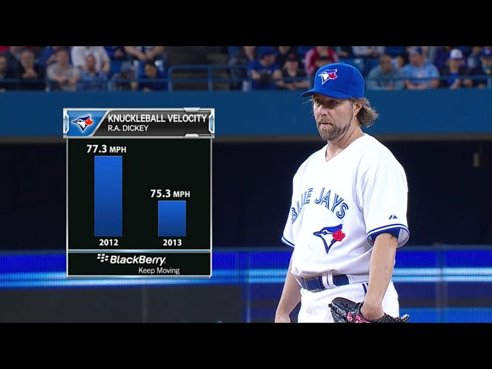
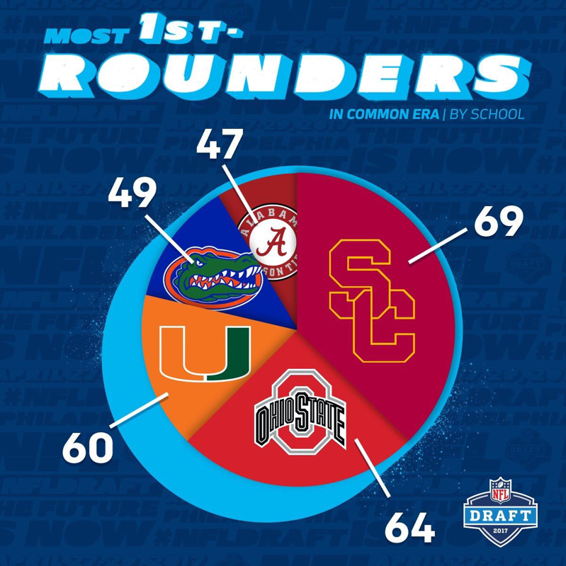
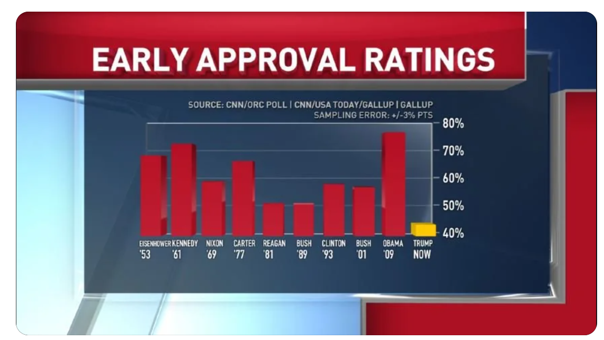
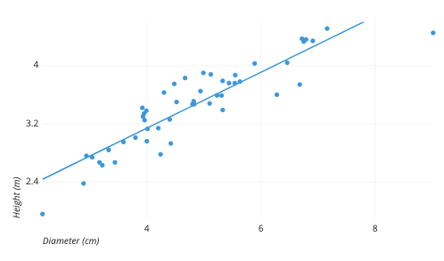
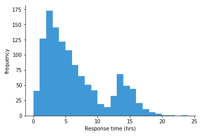
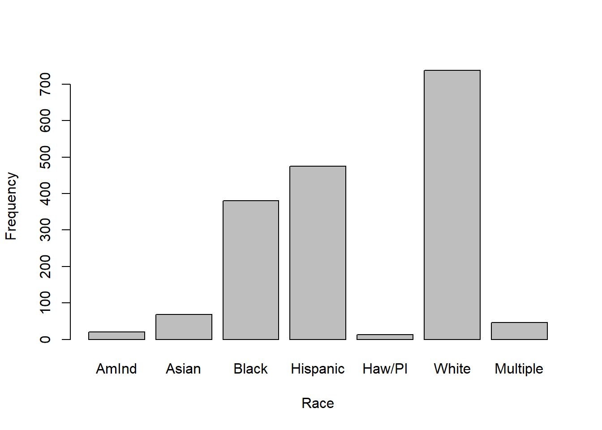
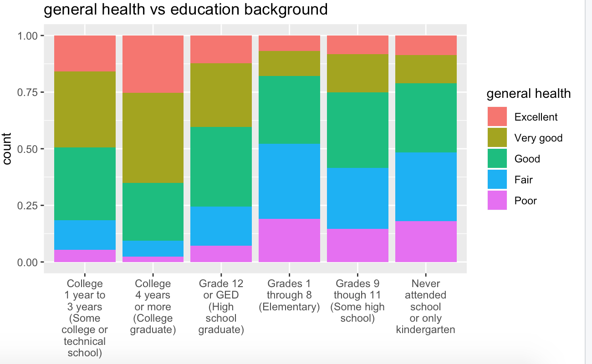
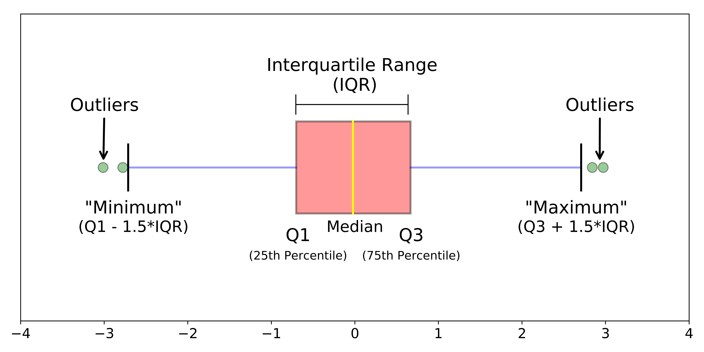

2026-10-27
I hope you all had a wonderful Fall Break!
– Please open up your data-viz project.
– Midterm-1 grades are posted! Please see the Moodle announcement
> Regrade window opens up after class; due Friday 5:00pm– The Statistics Experience is LIVE!
– Homework-3 is assigned
– Quiz-5 is assigned
– Proficiency test IV next Tuesday! Normal (fun) lab today!
Part-1
> The ggplot basics + structure
> The Dos and Don'ts of data visulaization
> Which plots are appropriate
Part-2
> More advanced plotting tools
> Answering research questions



Golden Rule: We can only use certain plots depending on the type of data we are working with!
Quantitative
Categorical
What plot is appropriate to graph the following scenarios
– One quantitative variable
– One quantitative variable; one categorical variable
– Two quantitative variables
– One categorical variable
– Two categorical variables
– Scatter plot
– Histogram
– Bar plot
– Segmented bar plot
– Box plot
Two quantitative variables

One quantitative variable

One categorical variable

Two categorical variables

One quantitative; One categorical

mtcars
You want to create a visualization. The first thing we need to do is set up the canvas…
mtcars |>ggplot()mtcars |>ggplot(aes(x = variable.name, y = variable.name))aes: describe how variables in the data are mapped to your canvas
+ “and”
When working with ggplot functions, we will add to our canvus using +
mtcars |>ggplot(aes(x = variable.name, y = variable.name)) +geom_point()data |>
mutate(group = factor(group, levels = c("Control", "Treatment", "Placebo")))data |>
mutate(group = fct_relevel(group, "Control", "Treatment", "Placebo"))You can also save your factor levels as an R-object, and use that in the functions as well!
Ordering matters! You will see that in lab!
Note: factor() or fct_relevel() change your variable to a factor with levels, to be re-ordered!
Let’s try it!
scale_x_continuous(
limits = c(0, 100),
breaks = seq(0, 100, by = 20),
labels = c("0", "20", "40", "60", "80", "100")
) +
scale_y_continuous(
limits = c(0, 50),
breaks = seq(0, 50, by = 10)
)We can do a lot with color!
– scale_color_manual()
– scale_color_gradient()
– scale_color_viridis_()
We can be very direct on where we want the color to go!
scale_fill_manual(
values = c(
"Adelie" = "lightskyblue1",
"Chinstrap" = "chartreuse3",
"Gentoo" = "gold2"
)
)Let’s try it!
– Construct plots with ggplot().
– Layers of ggplots are separated by +s.
– Aesthetic attributes of a geometries (color, size, transparency, etc.) can be mapped to variables in the data or set by the user.
– Use facet_wrap() when faceting (creating small multiples) by one variable and facet_grid() when faceting by two variables.